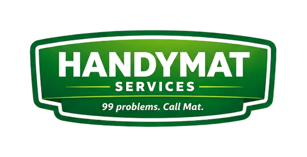
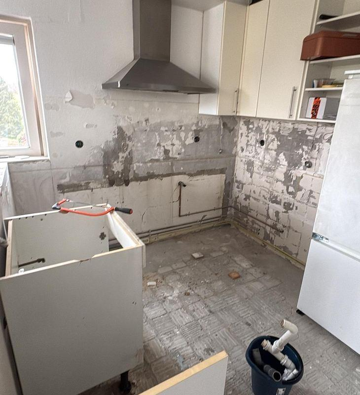
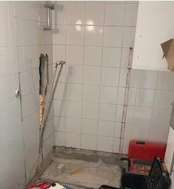
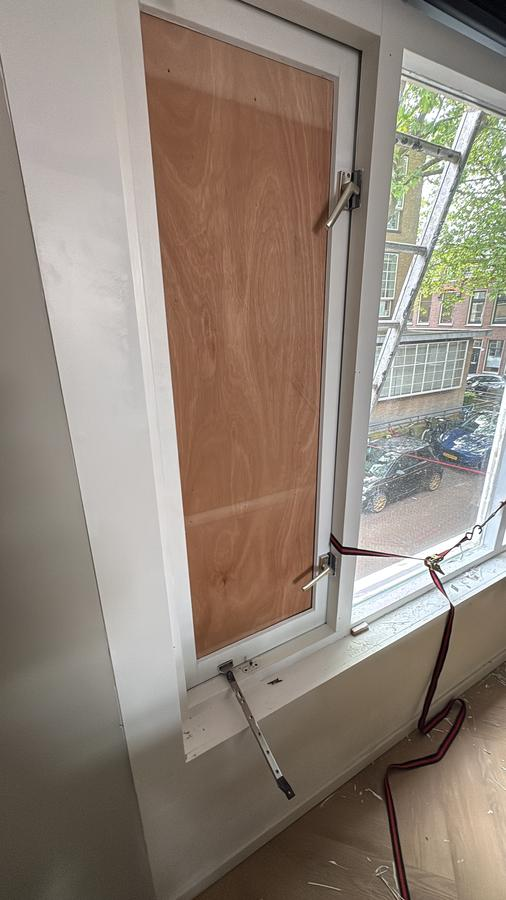
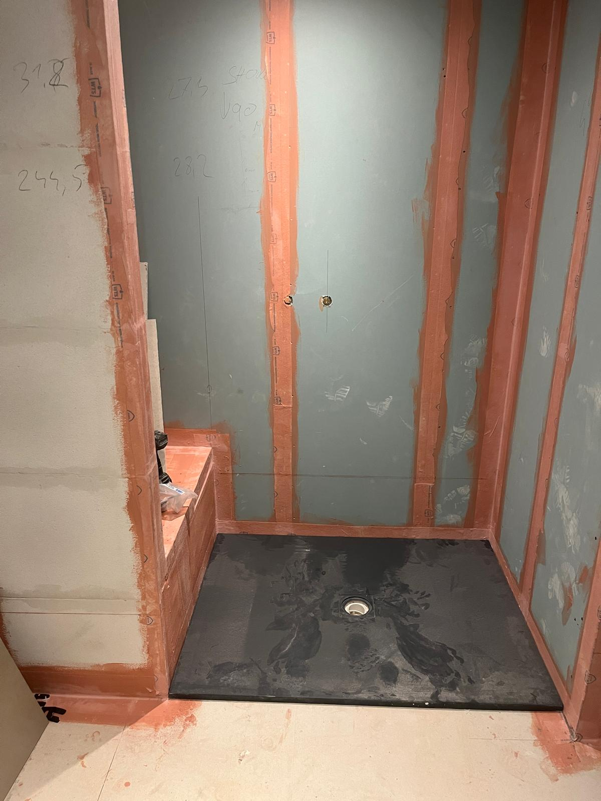
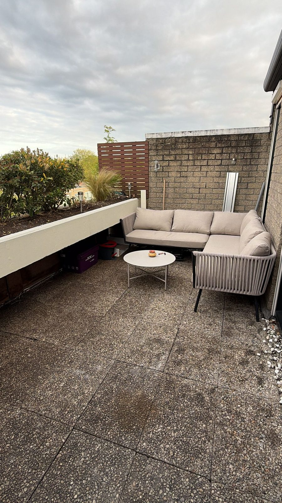
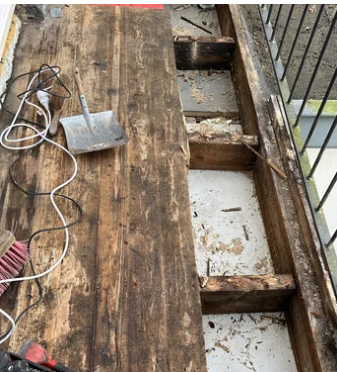
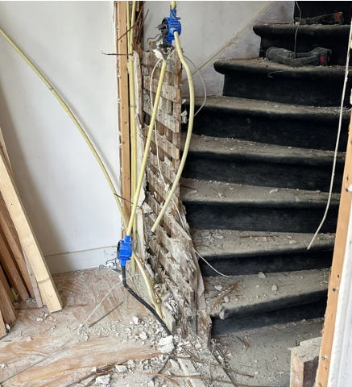
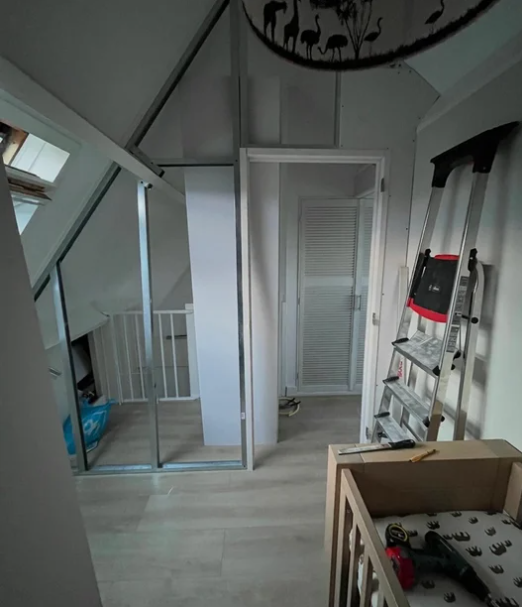
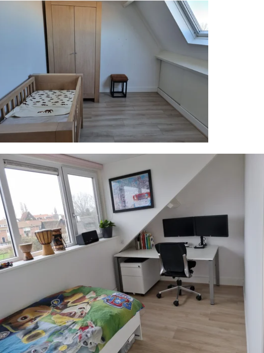

 |
Klussen en |
Een greep uit de klussen die ik de afgelopen tijd heb uitgevoerd in Haarlem, Heemstede en omgeving. Van een lekkende kraan tot wandpanelen plaatsen, met af en toe een grotere verbouwing ertussen. Klik op een project voor de volledige foto's en het verhaal erachter.
Deze eigenaresse in Heemstede wilde af van haar halfopen U-vormige keuken en koos voor een opstelling met een schiereiland. Eerst is de oude keuken gesloopt, inclusief een halfhoge muur, en zijn alle leidingen verlegd door ze in de vloer te frezen. Door de beperkte ruimte is gekozen voor een dieper aanrechtblad, wat meteen een bar opleverde waar met drie personen aan gegeten kan worden. De keuken is geleverd door Keuken Kampioen in Cruquius. Een keuken verbouwing in Heemstede laten uitvoeren? Handymat Services verzorgt keuken renovaties en keuken plaatsen in woningen en kleine kantoren in Kennemerland.

De eigenaresse van deze woning had een duidelijke wens: een ruim bad. De badkamer zelf was zeer beperkt qua ruimte, daarom is gekozen voor een groot bad met de afvoer in het midden. Omdat de douche aan de kopse kant zit, sta je tijdens het douchen niet op die afvoer, een detail dat vaak over het hoofd wordt gezien. Doordat het budget beperkt was, heeft Handymat ook ondersteund bij het vinden van betaalbare tegels en badkamermeubilair. Badkamer renovatie of badkamer betegelen laten doen in Haarlem? Handymat Services voert badkamer verbouwingen uit in heel Kennemerland.

Bij deze woning in Haarlem was het expansievat van de CV installatie aan vervanging toe. Een versleten of te klein expansievat kan leiden tot een wisselende waterdruk in de installatie. Het oude vat is verwijderd en vervangen door een nieuw exemplaar, passend bij de installatie. Expansievat vervangen of andere kleine klussen rond de installatie in Haarlem? Handymat Services helpt in heel Kennemerland.
Dit kantoor in Amsterdam werd deels opnieuw geverfd. De klant wilde een deel van de ruimte laten schilderen in de kleur van het eigen bedrijfslogo, een vrolijk geel dat de wanden meteen een herkenbare uitstraling geeft. Wanden en kozijnen zijn eerst gereinigd en waar nodig bijgewerkt, waarna alles strak in de gewenste kleur is gezet. Wanden schilderen laten doen in een kantoor of bedrijfsruimte in Amsterdam en omgeving? Handymat Services verzorgt schilderwerk in zowel woningen als kleine kantoren.
Bij deze woning in Haarlem was het glas ooit in een te krap kozijn geplaatst, waardoor het glas begon door te slaan en ging lekken. Door een net iets kleinere glasmaat te plaatsen kan de klant weer minimaal 25 jaar vooruit. Doordat het glas nu op de juiste wijze is geplaatst, kan de klant bovendien in de toekomst een beroep doen op de lange garantie van de fabrikant, mocht dat ooit nodig zijn. Glas vervangen in Haarlem of omgeving? Handymat Services helpt in heel Kennemerland.

Bij deze woning in Haarlem is de volledige tweede verdieping strip-down gerenoveerd: alle binnenmuren zijn eruit gehaald en de indeling is helemaal opnieuw ontworpen. De badkamer kreeg een ruime douche met een eigen zitgedeelte. Bij een verdieping met een houten vloer- en plafondconstructie is vochtbeheersing cruciaal, te veel vocht tast op termijn de balken en de isolatie van het platte dak aan. Daarom is bewust gekozen voor stevige mechanische ventilatie, zodat de constructie droog blijft. Een verdieping of badkamer verbouwen in een oudere woning in Haarlem? Handymat Services denkt mee over zowel de indeling als de bouwkundige aandachtspunten die bij oudere panden horen.

Dit terras in Heemstede had een opknapbeurt hard nodig: een grauwe, verweerde tegelvloer en dichtgegroeide, te grote beplanting die de ruimte klein maakten. De oude vloer is vervangen door een composietvloer, onderhoudsarm en jarenlang mooi zonder schilderwerk. De muren zijn grondig gereinigd en de plantenbak is opnieuw geschilderd, waardoor het geheel meteen fris oogt. De oude, te dominante planten zijn verwijderd en vervangen door nieuwe beplanting die beter bij de maat van het terras past. Het resultaat is een moderne buitenruimte die uitnodigt om te zitten. Terras renoveren of een composietvloer laten plaatsen in Heemstede of omgeving? Handymat Services helpt met de complete aanpak, van sloop tot een terras dat klaar is voor gebruik.

Bij dit balkon in Haarlem waren de dragende balken op meerdere plekken verrot, duidelijk te zien aan het beschadigde hout en de doorgezakte planken. In plaats van alleen te repareren is gekozen voor een grondige aanpak: het balkon is 50 cm dieper gemaakt, waardoor er nu echt ruimte is voor een zitje in plaats van een smalle doorloopstrook. De rotte constructie is vervangen door een nieuwe, stevige onderconstructie met hardhouten vlonderplanken. Het oude, gedateerde ijzeren hek is vervangen door een zelfgemaakt houten scherm met latwerk, waar inmiddels een klimplant tegenop groeit voor extra privacy en groen. Het resultaat is een balkon dat van een verwaarloosde hoek is veranderd in een volwaardige buitenruimte. Balkon renoveren of een verrotte balkonvloer laten vervangen in Haarlem? Handymat Services pakt het van sloop tot afwerking op.

Deze trap in Haarlem maakte onderdeel uit van een grotere woonhuisrenovatie. De oude trap was afgeleefd, met versleten, donkere treden en tijdens de verbouwing kwam ook duidelijk zichtbaar hoeveel leidingwerk er achter de muur schuilging. In plaats van een compleet nieuwe trap is gekozen voor zelf op maat gemaakte overzettreden: lichte, houten treden die over de bestaande constructie heen zijn geplaatst. De zijkanten van de trap zijn zwart gemaakt, wat mooi contrasteert met het lichte hout. Ook het traphekje met balusters is zelf op maat gemaakt, in dezelfde zwarte kleur, en sluit aan bij de stalen deur met glasindeling verderop in de hal, waardoor de trap en de rest van de gang visueel één geheel vormen. Trap renoveren, overzettreden of een traphekje op maat laten maken in Haarlem? Handymat Services pakt dit soort klussen op, inclusief het bijbehorende leidingwerk.

In deze woning in Heemstede zijn nieuwe houten plinten geplaatst, inclusief de lastigere hoeken rondom de haard. Plinten laten plaatsen of vervangen in Heemstede of omgeving? Handymat Services verzorgt dit soort afwerkingsklussen.
Bij deze woning in Halfweg is de open zolderverdieping opgedeeld in twee aparte slaapkamers. Omdat de kamers bedoeld waren voor een baby en een tiener, is er bij de wanden bewust extra aandacht besteed aan isolatie, zowel voor een stabiele temperatuur als voor geluid tussen de twee ruimtes. De wanden zijn afgewerkt met renovatievliesbehang, dat kleine oneffenheden wegwerkt en meteen klaar is om te schilderen. Het resultaat is twee lichte, functionele kamers in plaats van één open zolder. Zolder splitsen of isoleren in Halfweg of omgeving? Handymat Services denkt mee over zowel de indeling als de afwerking.


Bij deze woonkamer in Haarlem is een koof gebouwd langs het plafond, met daarin ingebouwde ledspots voor sfeerverlichting. In dezelfde koof is meteen de elektra-aansluiting voor 2 surroundspeakers meegenomen. Het resultaat is een strakke, afgewerkte plafondrand die zowel sfeer toevoegt als de speakeropstelling praktisch bekabeld maakt. Koof bouwen, ledverlichting of een elektra-aansluiting voor speakers laten aanleggen in Haarlem? Handymat Services denkt mee over zowel de afwerking als de bekabeling.